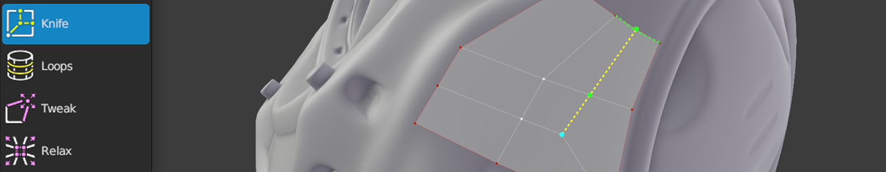

Retopoflow
 Knife Help
Knife Help
Shortcut: Ctrl+5, Ctrl+K
Quick Shortcut: K
The Knife tool allows you to cut into the existing geometry similarly to Blender’s Knife tool.

Note: the Knife tool will only cut into existing geometry; it will not create new vertices, edges, or faces.
If nothing is selected, the first insert will
- insert a new detached vertex if the mouse is hovering a face,
- split the hovered edge,
- select the hovered vertex, or
- set a knife starting point (does not create a new vertex).
The subsequent insertions will cut in new edges, splitting faces and edges accordingly.
Note: an existing face will not be split until there are distinct entrance and exit vertices. Until the face can split, the created vertices and edges will be non-manifold (possibly detached) geometry.
Creating
Ctrl+LMB, Ctrl+LMB+Double |
: | insert geometry connected to selected geometry |
E |
: | resets the knife starting point |
Selecting
LMB+Click, Shift+LMB+Click |
: | select geometry |
LMB+Drag, Shift+LMB+Drag |
: | paint geometry selection |
Ctrl+Shift+LMB+Click |
: | select along shortest path |
A |
: | select / deselect all |
Alt+A |
: | deselect all |
Transforming
G |
: | grab and move selected geometry |
LMB+Drag |
: | grab and move selected geometry under mouse |
Shift+S |
: | smooths edge flow of selected geometry |
Other
Backspace, Delete, X |
: | delete/dissolve/collapse selected |
V |
: | rip selected edge |
Alt+V |
: | rip and fill selected edge |